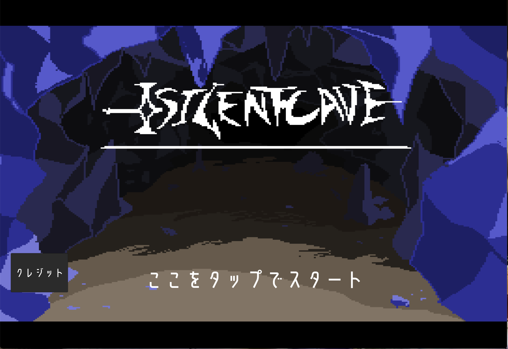

大乱闘スマッシュブラザーズ勝敗ツール

大乱闘スマッシュブラザーズのルール、対戦環境を選択し、
それに対する勝敗を計測し、勝率を割り出すツールです。
SilentCave

見下ろし型ダンジョン探索のアクションゲームです。
ダンジョンにあるアイテムを駆使して各階のボスを倒していくゲームです。
受身マスター
タップとスワイプで操作する全３ステージのシンプルアクションゲームです。
ビルの屋上や電波塔などの高所から投げられるので、
投げられる角度を決め、地面や障害物で受け身をとり、
無事に着地して段位を昇段させることを目指します。